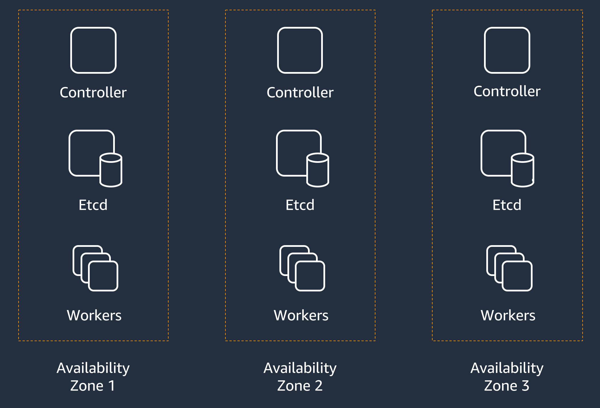
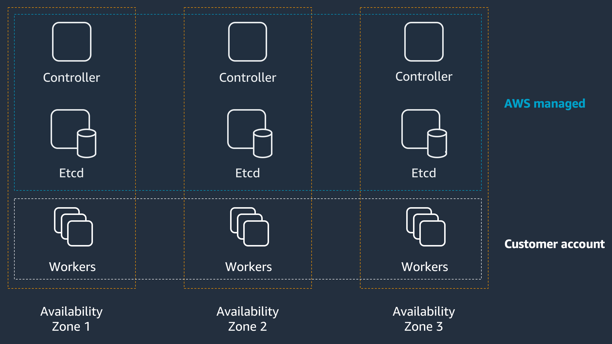
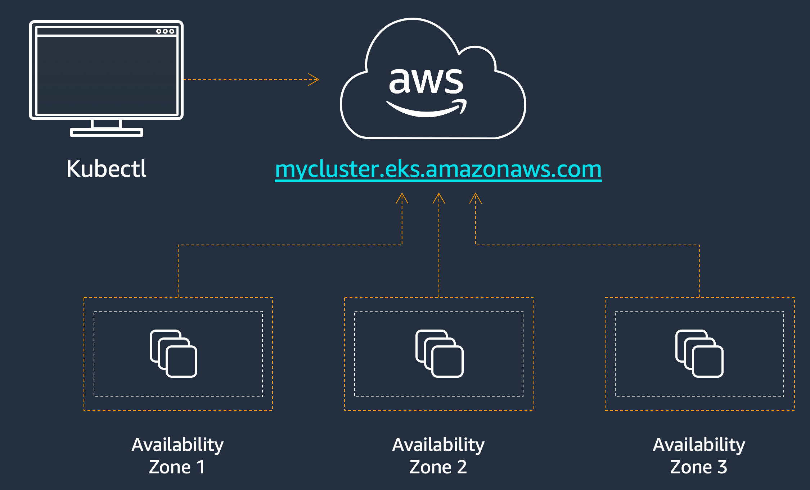
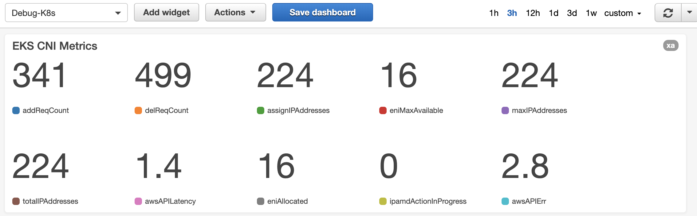
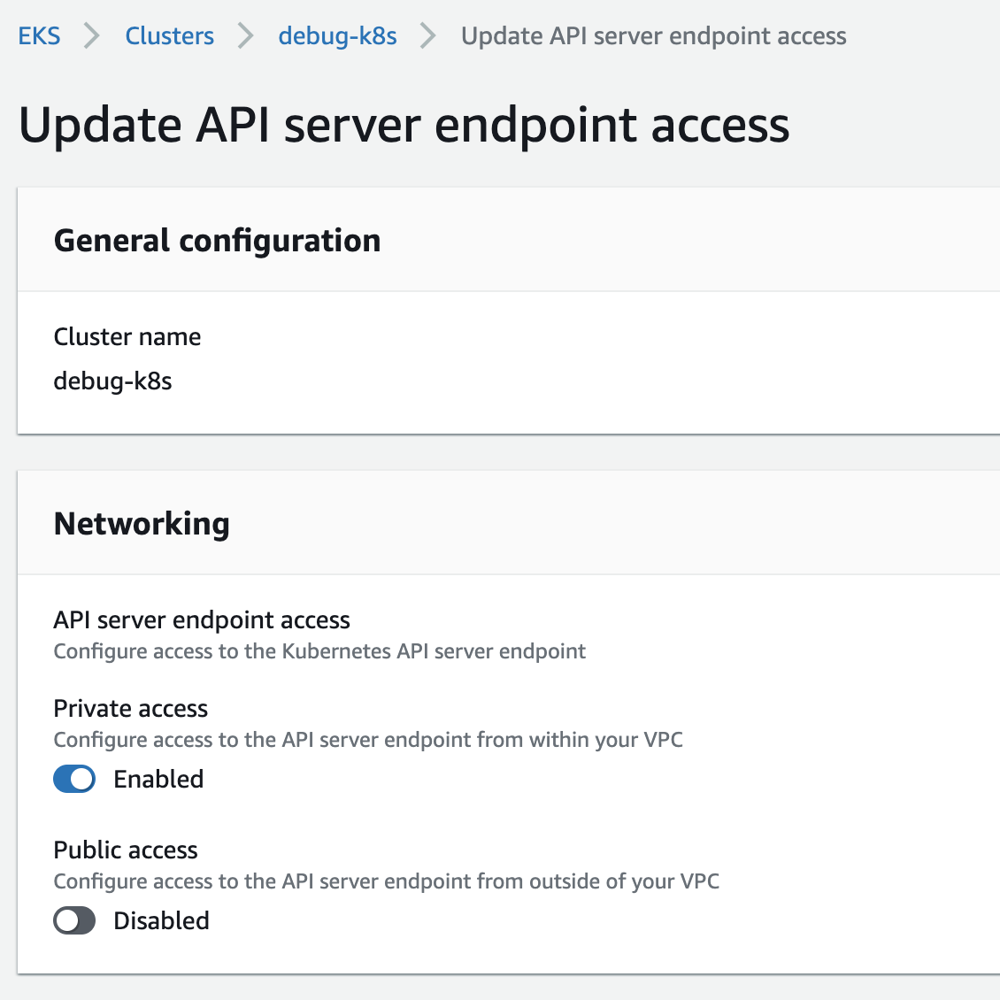

Topics
Cluster Design
Networking
Kubectl
Pods
Resource Reservation
StatefulSets
Load Balancing & Ingress
Monitoring
Section 1:
Cluster Design
Kubernetes Components

How to setup a Kubernetes cluster
1. Create Controller nodes (aka the Control Plane)
2. Setup etcd and connect to Controller
3. Use kubectl to connect to the Control Plan
4. Install Worker nodes (aka the Data Plane)
5. Deploy apps and add-ons
6. … profit?
Design considerations for k8s cluster
- Control Plane: hosted or self-managed
- Data Plane: hosed or self-managed
- EC2 instance size based upon number of worker nodes
- Operating system?
- How many pods per cluster?
- Etcd co-located with master?
- Secure and backup etcd, how often?
- High availability
- Disaster recovery
- Upgrade k8s versions
- Staying up to date with k8s release cadence, CVEs and security patches
- Monitoring and logging
- One big cluster, multiple small clusters
- Blast radius
Amazon EKS Architecture

Amazon EKS architecture
- AWS Managed Control Plane
- Master nodes
- etcd cluster nodes
- NLB for API load-balancing
- Highly available
- AWS IAM authentication
- VPC networking
Kubectl
One CLI to control your k8s cluster

Master node components
- API-Server: exposes APIs for master nodes
- Controller Manager: makes changes attempting to move the current state towards the desired state
- Scheduler: decides which pod should run on which worker node
- etcd: key/value data store used to store cluster state
etcd design
- Minimum 3 etcd servers
- Spread across availability zones
- Uses RAFT protocol
Worker node components
- kubelet: handles communication between worker and master nodes
- kube-proxy: handles communication between pods, nodes, and the outside world
- container runtime (CRI): runs containers on the node.
Create EKS cluster
eksctl create cluster -f resources/manifests/eks-cluster.yaml
eksctl configuration file
apiVersion: eksctl.io/v1alpha5
kind: ClusterConfig
metadata:
name: debug-k8s
region: us-east-1
nodeGroups:
- name: nodegroup
instanceType: m5.xlarge
desiredCapacity: 4
ssh:
allow: true
publicKeyName: arun-us-east1
cloudWatch:
clusterLogging:
# enable specific types of cluster control plane logs
enableTypes: ["audit", "authenticator", "controllerManager"]
# all supported types: "api", "audit", "authenticator", "controllerManager", "scheduler"
# supported special values: "*" and "all"
Section 2:
Networking
Networking
- Container Networking Interface (CNI)
- CoreDNS (DNS Server)
- Amazon EKS Endpoint access
Section 2.1:
Networking
Container Networking Interface (CNI)
Container Networking Interface
Container Networking Interface consists of a specification, libraries for writing plugins to configure network interface in Linux containers, and a number of supported plugins.
- EKS uses amazon-vpc-cni
- Worker nodes and pods get IP address from VPC
Amazon VPC CNI for Kubernetes
- Elastic Network Interface (ENI) attached to the worker node
- Pods recieve an IP address from a VPC subnet
- Max number of pods is limited by ENIs that can be attached to EC2 instance
- No IP = Pod Pending
- Plan for growth
- Customize cni variables
Create a deployment:
$ kubectl create -f resources/manifests/hello-deployment.yaml
Scale to 240 replicas
$ kubectl scale --replicas=240 deployment hello
Get deployments:
$ kubectl get deployments
NAME READY UP-TO-DATE AVAILABLE AGE
hello 222/240 240 222 5m27s
Get pending pods:
$ kubectl get pods --field-selector=status.phase==Pending
NAME READY STATUS RESTARTS AGE
hello-9fdd9558f-2x8d8 0/1 Pending 0 3m55s
hello-9fdd9558f-4s4hl 0/1 Pending 0 3m55s
hello-9fdd9558f-5fsfv 0/1 Pending 0 3m55s
hello-9fdd9558f-5jffb 0/1 Pending 0 3m55s
hello-9fdd9558f-69f6x 0/1 Pending 0 3m54s
hello-9fdd9558f-6pfzb 0/1 Pending 0 3m55s
hello-9fdd9558f-7l844 0/1 Pending 0 3m55s
hello-9fdd9558f-8zmhk 0/1 Pending 0 3m55s
hello-9fdd9558f-d48ng 0/1 Pending 0 3m55s
hello-9fdd9558f-hqpwp 0/1 Pending 0 3m55s
hello-9fdd9558f-jjs7b 0/1 Pending 0 3m55s
hello-9fdd9558f-jsqsv 0/1 Pending 0 3m55s
hello-9fdd9558f-kjjt4 0/1 Pending 0 3m55s
hello-9fdd9558f-m7fnc 0/1 Pending 0 3m55s
hello-9fdd9558f-pp9ls 0/1 Pending 0 3m55s
hello-9fdd9558f-sqnvg 0/1 Pending 0 3m55s
hello-9fdd9558f-v4m4z 0/1 Pending 0 3m54s
hello-9fdd9558f-vcsx6 0/1 Pending 0 3m55s
Get events:
$ kubectl get events --field-selector involvedObject.kind=Pod,type=Warning
Shows the output:
11m Warning FailedCreatePodSandBox pod/hello-9fdd9558f-zns6z Failed create pod sandbox: rpc error:
code = Unknown desc = failed to set
up sandbox container "2f43374edb1fdc76
74587fab2f040bdc8e29abb4cf0ac7a12daea4
f04bab8fe4" network for pod
"hello-9fdd9558f-zns6z":
NetworkPlugin cni failed to set up
pod "hello-9fdd9558f-zns6z_default"
network: add cmd: failed to assign an
IP address to container
IP address allocation
ipamD (IP Address Management Daemon) allocates ENIs and secondary IP addresses from the instance subnet.
Each ENI uses 1 IP address to attach to the instance.
With N ENIs and M addresses:
Maximum number of IPs = min((N * (M - 1)), free IPs in the subnet)
For our cluster with m5.xlarge node type:
N = 15
M = 4
Default subnet is 192.168.0.0/19 => 8192 IPs
Maximum number of IP addresses per host is 56 = min(4 * (15 - 1), 8192)
v1.16 recommends no more than 100 pods per node
CNI Metrics Helper
CNI Metrics Helper helps you track how many IP addresses have been assigned and how many are available.
The following metrics are collected for your cluster and exported to CloudWatch:
- Maximum number of ENIs that the cluster can support
- Number of ENIs have been allocated to pods
- Number of IP addresses currently assigned to pods
- Total and maximum numbers of IP addresses available
- Number of ipamD errors
Create CNI Metrics Helper Policy
aws iam create-policy \
--policy-name CNIMetricsHelperPolicy \
--description "Grants permission to write metrics to CloudWatch" \
--policy-document file://./resources/manifests/cni-metrics-policy.json
Attach policy to the worker nodes IAM role:
$ ROLE_NAME=$(aws iam list-roles \
--query \
'Roles[?contains(RoleName,`debug-k8s-nodegroup`)].RoleName' --output text)
aws iam attach-role-policy \
--role-name $ROLE_NAME \
--policy-arn arniam:policy/CNIMetricsHelperPolicy
Deploy CNI metrics helper
$ kubectl apply -f \
https://raw.githubusercontent.com/aws/amazon-vpc-cni-k8s/release-1.5/config/v1.5/cni-metrics-helper.yaml
...
$ kubectl get deployment cni-metrics-helper -n kube-system
NAME READY UP-TO-DATE AVAILABLE AGE
cni-metrics-helper 1/1 1 1 60s
CNI Metrics Helper for Amazon EKS Cluster

Section 2.2:
Networking
CoreDNS (DNS Server)
CoreDNS
- CoreDNS was GA in 1.11
- CoreDNS uses Corefile for configuration
- Corefile can be edited by editing coredns configmap
Check CoreDNS pods are running
$ kubectl get pods --namespace=kube-system -l k8s-app=kube-dns
---
NAME READY STATUS RESTARTS AGE
coredns-79d667b89f-hcwnr 1/1 Running 0 63d
coredns-79d667b89f-qh8cd 1/1 Running 0 63d
Check if CoreDNS service is up
$ kubectl get svc --namespace=kube-system
---
kubectl get svc kube-dns --namespace=kube-system
NAME TYPE CLUSTER-IP EXTERNAL-IP PORT(S) AGE
kube-dns ClusterIP 10.100.0.10 <none> 53/UDP,53/TCP 63d
Enable logging in CoreDNS
Add log in Corefile
$ kubectl -n kube-system edit configmap coredns
---
apiVersion: v1
kind: ConfigMap
metadata:
name: coredns
namespace: kube-system
data:
Corefile: |
.:53 {
log
errors
health
kubernetes cluster.local in-addr.arpa ip6.arpa {
pods insecure
upstream
fallthrough in-addr.arpa ip6.arpa
}
prometheus :9153
proxy . /etc/resolv.conf
cache 30
loop
reload
loadbalance
}
Check CoreDNS logs
$ for p in $(kubectl get pods --namespace=kube-system -l k8s-app=kube-dns -o name); do kubectl logs --namespace=kube-system $p; done
.:53
2019-09-12T1647.907Z [INFO] CoreDNS-1.2.6
2019-09-12T1647.907Z [INFO] linux/amd64, go1.10.8, 756749c5
CoreDNS-1.2.6
linux/amd64, go1.10.8, 756749c5
[INFO] plugin/reload: Running configuration MD5 = 2e2180a5eeb3ebf92a5100ab081a6381
W1002 0656.326426 1 reflector.go:341] github.com/coredns/coredns/plugin/kubernetes/controller.go watch of *v1.Namespace ended with: too old resource version: 123473 (4874440)
W1002 2207.890987 1 reflector.go:341] github.com/coredns/coredns/plugin/kubernetes/controller.go watch of *v1.Namespace ended with: too old resource version: 4874440 (5041806)
W1002 2207.893920 1 reflector.go:341] github.com/coredns/coredns/plugin/kubernetes/controller.go watch of *v1.Service ended with: too old resource version: 123345 (5041806)
W1008 0053.440168 1 reflector.go:341] github.com/coredns/coredns/plugin/kubernetes/controller.go watch of *v1.Service ended with: too old resource version: 5041806 (6327012)
CoreDNS scaling
- Memory required in MB
(Pods + Services)/1000 + 54
Amazon EKS configuration:
Limits: memory: 170Mi Requests: cpu: 100m memory: 70MiNode-local DNS addon
- CoreDNS DaemonSet on each node
Scale CoreDNS pods
kubectl -n kube-system scale --replicas=10 deployment/coredns
CoreDNS autopath plugin
- Optional CoreDNS plugin
- Improves performance for queries of names external to the cluster
- Requires CoreDNS to use more memory
coreDNS Memory with autopath required in MB =
(Pods + Services)/250 + 56
Section 2.3:
Networking
Amazon EKS Endpoint access
Amazon EKS Cluster Endpoint - public or private
$ kubectl get nodes
Unable to connect to the server: dial tcp: lookup BD969A3FAD4BC772192A7E99B5794C2F.gr7.us-east-1.eks.amazonaws.com: no such host

Section 3:
Using Kubectl
EKS Architecture

How does kubectl work
- kubectl communicates with the Kubernetes API server
- uses a configuration file generally located at ~/.kube/config
- In EKS, kubectl + aws-iam-authenticator = ❤️
Kubectl on client-side
Validation
Infer generators, explicitly specified using –generator
Create a Runtime object using generators
API version negotiation
REST request created
Authn
Kubectl on server-side
Authn and authz
Admission controllers
Deserializes HTTP request to etcd
Initializers
Deployment, ReplicaSet, Scheduler controller
Kubelet queries API server (every 20 secs) for pods
Identify CRI and “pause” containers
CNI plugin (IP address allocation)
Container startup (pull image, start using CRI)
… have you ever ran into this?
$ kubectl get svc
error: the server doesn't have a resource type "svc"
Update kubectl & aws-iam-authenticator
Update kubeconfig using AWS cli or eksctl
Is cluster endpoint accessible?
Check if cluster is accessible
$ curl -k http://CLUSTER_ENDPOINT/api/v1
response:
"kind": "APIResourceList",
"groupVersion": "v1",
"resources": [
{
"name": "bindings",
"singularName": "",
"namespaced": true,
"kind": "Binding",
"verbs": [
"create"
...
Use AWS CLI to auto-generate kube config file
$ aws eks update-kubeconfig --name {cluster-name}
$ cat ~/.kube/config
-----
apiVersion: v1
clusters:
- cluster:
certificate-authority-data: {REDACTED}
server: https://DFEA886AB17A069545SJDS9F06BCE3DCC.gr7.us-west-2.eks.amazonaws.com
name: arneks09123456789:cluster/eks1
contexts:
- context:
cluster: arneks09123456789:cluster/eks1
user: arneks09123456789:cluster/eks1
name: arneks09123456789:cluster/eks1
current-context: arneks09123456789:cluster/eks1
kind: Config
preferences: {}
users:
- name: arneks09123456789:cluster/eks1
user:
exec:
apiVersion: client.authentication.k8s.io/v1alpha1
args:
- token
- -i
- eks1
command: aws-iam-authenticator
aws-auth config map
$ kubectl -n kube-system describe configmap aws-auth
-----
Name: aws-auth
Namespace: kube-system
Labels: <none>
Annotations: <none>
Data
====
mapRoles:
----
- groups:
- system:bootstrappers
- system:nodes
rolearn: arniam:role/eksctl-eks-nodegroup-ng
username: system{{EC2PrivateDNSName}}
mapUsers:
----
- userarn: arniam:user/realvarez
groups:
- system:masters
If you are not part of the aws-auth configmap, then you’ll see this,
error: You must be logged in to the server (Unauthorized)
get your arn added to the aws-auth configmap
mapUsers:
----
- userarn: arniam:user/{YOUR_USER_ARN_HERE}
- groups:
- - system:masters
-
kubectl works!
$ kubectl cluster-info
-----
Kubernetes master is running at https://xxxx.y.region.eks.amazonaws.com
check cluster status:
$ kubectl get componentstatus
-----
NAME STATUS MESSAGE ERROR
scheduler Healthy ok
controller-manager Healthy ok
etcd-0 Healthy {"health": "true"}
Section 4:
Pod Lifecycle
Pod lifecycle
You created a deployment with 8 replicas:
$ kubectl create -f hello-deployment.yaml
deployment.apps/hello created
Or scaled an existing deployment to 8 replicas:
$ kubectl scale --replicas=8 deployment hello
deployment.extensions/hello scaled
Deployment shows only 4 replicas are available:
$ kubectl get deployments
NAME READY UP-TO-DATE AVAILABLE AGE
hello 4⁄8 8 4 23s
List pods
$ kubectl get pods
. . .
=======
NAME READY STATUS RESTARTS AGE
hello-6d4fbd5d76-9xqxg 1/1 Running 0 5s
hello-6d4fbd5d76-brv7k 0/1 Pending 0 5s
hello-6d4fbd5d76-hbf8h 0/1 Pending 0 5s
hello-6d4fbd5d76-jdzlw 1/1 Running 0 5s
hello-6d4fbd5d76-jqsfk 0/1 Pending 0 5s
hello-6d4fbd5d76-k29gb 1/1 Running 0 5s
hello-6d4fbd5d76-vjr62 0/1 Pending 0 5s
hello-6d4fbd5d76-z69pp 1/1 Running 0 5s
Multiple reasons for pending pod
- Not enough resources in the cluster
- CPU, memory, port
- Node security group does not have an ingress rule with 443 port access
- Not enough IP addresses
- Ensure all nodes are healthy
Describe the pod
$ kubectl describe pod/hello-6d4fbd5d76-brv7k
Shows the output:
. . .
Events:
Type Reason Age From Message
---- ------ ---- ---- -------
Warning FailedScheduling 42s (x2 over 42s) default-scheduler 0/4 nodes are available: 4 Insufficient cpu.
Events are only visible on pods, not on Deployments, ReplicaSet, Job, or any other resource that created pod.
Get all events
$ kubectl get events
LAST SEEN TYPE REASON KIND MESSAGE
2m57s Warning FailedScheduling Pod 0/4 nodes are available: 4 Insufficient cpu.
2m57s Warning FailedScheduling Pod 0/4 nodes are available: 4 Insufficient cpu.
2m57s Warning FailedScheduling Pod 0/4 nodes are available: 4 Insufficient cpu.
2m57s Warning FailedScheduling Pod 0/4 nodes are available: 4 Insufficient cpu.
Only the warning events
$ kubectl get events --field-selector type=Warning
Events only for the pod
$ kubectl get events --field-selector involvedObject.kind=Pod,involvedObject.name=hello-6d4fbd5d76-brv7k
LAST SEEN TYPE REASON KIND MESSAGE
4m41s Warning FailedScheduling Pod 0/4 nodes are available: 4 Insufficient cpu.
Sort by timestamp
$ kubectl get events --sort-by='.lastTimestamp'
Memory/CPU requirements of pod
$ kubectl describe deployments/hello
Output:
Containers:
hello:
Image: nginx:latest
Port: <none>
Host Port: <none>
Limits:
cpu: 2
memory: 2000Mi
Requests:
cpu: 2
memory: 2000Mi
Environment: <none>
Request and limit
Default CPU request is 200m and none on memory. There are no limits.
1000m (milicores) = 1 core = 1 CPU = 1 AWS vCPU
So, that means:
100m cpu = 0.1 cpu
In this case, CPU request and limits have been specified to 2 and memory to 2GB. So we need 8 blocks of 2 CPU and 2 GB memory.
Memory/CPU in cluster
$ kubectl top nodes
Error from server (ServiceUnavailable): the server is currently unable to handle the request (get nodes.metrics.k8s.io)
Install metrics-server
$ curl -OL https://github.com/kubernetes-sigs/metrics-server/archive/v0.3.6.tar.gz
$ tar xzvf v0.3.6.tar.gz
$ kubectl create -f metrics-server-0.3.6/deploy/1.8+/
Confirm Metrics API is available
$ kubectl get apiservice v1beta1.metrics.k8s.io
NAME SERVICE AVAILABLE AGE
v1beta1.metrics.k8s.io kube-system/metrics-server True 11d
Memory/CPU for nodes
$ kubectl top nodes
NAME CPU(cores) CPU% MEMORY(bytes) MEMORY%
ip-192-168-28-108.us-west-2.compute.internal 28m 0% 410Mi 2%
ip-192-168-48-190.us-west-2.compute.internal 33m 0% 363Mi 2%
ip-192-168-51-148.us-west-2.compute.internal 29m 0% 338Mi 2%
ip-192-168-64-166.us-west-2.compute.internal 32m 0% 395Mi 2%
Capacity and allocatable memory for each node
capacity memory:
$ kubectl get no -o json | jq -r '.items | sort_by(.status.capacity.memory)[]|[.metadata.name,.status.capacity.memory]| @tsv'
ip-192-168-28-108.us-west-2.compute.internal 15950552Ki
ip-192-168-48-190.us-west-2.compute.internal 15950552Ki
ip-192-168-51-148.us-west-2.compute.internal 15950552Ki
ip-192-168-64-166.us-west-2.compute.internal 15950552Ki
allocatable memory:
$ kubectl get no -o json | jq -r '.items | sort_by(.status.allocatable.memory)[]|[.metadata.name,.status.allocatable.memory]| @tsv'
ip-192-168-28-108.us-west-2.compute.internal 15848152Ki
ip-192-168-48-190.us-west-2.compute.internal 15848152Ki
ip-192-168-51-148.us-west-2.compute.internal 15848152Ki
ip-192-168-64-166.us-west-2.compute.internal 15848152Ki
How is allocatable calculated?
[Allocatable] = [Node Capacity] - [Kube-Reserved] - [System-Reserved] - [Hard-Eviction-Threshold]
Explained at https://github.com/kubernetes/community/blob/master/contributors/design-proposals/node/node-allocatable.md.
Capacity and allocatable CPU
capacity CPU:
$ kubectl get no -o json | jq -r '.items | sort_by(.status.capacity.cpu)[]|[.metadata.name,.status.capacity.cpu]| @tsv'
ip-192-168-28-108.us-west-2.compute.internal 4
ip-192-168-48-190.us-west-2.compute.internal 4
ip-192-168-51-148.us-west-2.compute.internal 4
ip-192-168-64-166.us-west-2.compute.internal 4
allocatable CPU:
$ kubectl get no -o json | jq -r '.items | sort_by(.status.allocatable.cpu)[]|[.metadata.name,.status.allocatable.cpu]| @tsv'
ip-192-168-28-108.us-west-2.compute.internal 4
ip-192-168-48-190.us-west-2.compute.internal 4
ip-192-168-51-148.us-west-2.compute.internal 4
ip-192-168-64-166.us-west-2.compute.internal 4
So, there is enough memory and CPU. Why the pods are not getting scheduled?
kubeReserved and evictionHard need to be set explicitly
EKS AMI now sets a minimum evictionHard and kubeReserved values: https://github.com/awslabs/amazon-eks-ami/pull/350.
Alternatively, you can set these values using eksctl https://eksctl.io/usage/customizing-the-kubelet/.
Cluster Autoscaler
Serves two purpose:
- Pods fail to run due to insufficient resources
- Recycle nodes that are underutilized for an extended period of time
Let’s install it!
IAM policy for Cluster Autoscaler
Create IAM policy with autoscaling permissions and attach to the worker node IAM roles.
Create IAM policy:
$ aws iam create-policy --policy-name AmazonEKSAutoscalingPolicy --policy-document file://../../resources/manifests/autoscaling-policy.json
{
"Policy": {
"PolicyName": "AmazonEKSAutoscalingPolicy",
"PolicyId": "ANPARKOFJSCVVWD4MQEKB",
"Arn": "arniam:policy/AmazonEKSAutoscalingPolicy",
. . .
}
}
Attach policy to the IAM role:
$ ROLE_NAME=$(aws iam list-roles \
--query \
'Roles[?contains(RoleName,`debug-k8s-nodegroup`)].RoleName' --output text)
$ aws iam attach-role-policy \
--role-name $ROLE_NAME \
--policy-arn arniam:policy/AmazonEKSAutoscalingPolicy
Auto-discovery of ASG by CA
Setup auto discovery of Auto Scaling Groups by Cluster Autoscaler by attaching tags to the nodegroup:
$ ASG_NAME=$(aws autoscaling describe-auto-scaling-groups \
--query \
'AutoScalingGroups[?contains(AutoScalingGroupName,`debug-k8s-nodegroup`)].AutoScalingGroupName' --output text)
$ aws autoscaling create-or-update-tags \
--tags \
ResourceId=$ASG_NAME,ResourceType=auto-scaling-group,Key=k8s.io/cluster-autoscaler/enabled,Value=something,PropagateAtLaunch=true \
ResourceId=$ASG_NAME,ResourceType=auto-scaling-group,Key=k8s.io/cluster-autoscaler/debug-k8s,Value=something,PropagateAtLaunch=true
Create Cluster Autoscaler:
$ CA_FILE=cluster-autoscaler-autodiscover.yaml
$ curl -o ${CA_FILE} https://raw.githubusercontent.com/kubernetes/autoscaler/master/cluster-autoscaler/cloudprovider/aws/examples/cluster-autoscaler-autodiscover.yaml
$ sed -i -e 's/<YOUR CLUSTER NAME>/debug-k8s/' ${CA_FILE}
$ kubectl create -f ${CA_FILE}
Cluster Autoscaler logs
$ kubectl logs -f deployment/cluster-autoscaler -n kube-system
Shows the output:
I1113 0100.754350 1 scale_up.go:263] Pod default/hello-6d4fbd5d76-hbf8h is unschedulable
I1113 0100.754358 1 scale_up.go:263] Pod default/hello-6d4fbd5d76-vjr62 is unschedulable
I1113 0100.754365 1 scale_up.go:263] Pod default/hello-6d4fbd5d76-brv7k is unschedulable
I1113 0100.754371 1 scale_up.go:263] Pod default/hello-6d4fbd5d76-jqsfk is unschedulable
I1113 0100.754407 1 scale_up.go:300] Upcoming 0 nodes
I1113 0100.754416 1 scale_up.go:335] Skipping node group eksctl-debug-k8s-nodegroup-ng-bb0efd30-NodeGroup-H77X21MZFGGH - max size reached
I1113 0100.754426 1 scale_up.go:411] No expansion options
ASG Limits
Update Autoscaling Group limits:
$ aws autoscaling update-auto-scaling-group --auto-scaling-group-name $ASG_NAME --max-size 8
Cluster Autoscaler logs are updated:
I1113 0111.009046 1 scale_up.go:263] Pod default/hello-6d4fbd5d76-jqsfk is unschedulable
I1113 0111.009052 1 scale_up.go:263] Pod default/hello-6d4fbd5d76-hbf8h is unschedulable
I1113 0111.009057 1 scale_up.go:263] Pod default/hello-6d4fbd5d76-vjr62 is unschedulable
I1113 0111.009062 1 scale_up.go:263] Pod default/hello-6d4fbd5d76-brv7k is unschedulable
I1113 0111.009098 1 scale_up.go:300] Upcoming 0 nodes
I1113 0111.009322 1 waste.go:57] Expanding Node Group eksctl-debug-k8s-nodegroup-ng-bb0efd30-NodeGroup-H77X21MZFGGH would waste 50.00% CPU, 93.58% Memory, 71.79% Blended
I1113 0111.009346 1 scale_up.go:418] Best option to resize: eksctl-debug-k8s-nodegroup-ng-bb0efd30-NodeGroup-H77X21MZFGGH
I1113 0111.009356 1 scale_up.go:422] Estimated 4 nodes needed in eksctl-debug-k8s-nodegroup-ng-bb0efd30-NodeGroup-H77X21MZFGGH
I1113 0111.009374 1 scale_up.go:501] Final scale-up plan: [{eksctl-debug-k8s-nodegroup-ng-bb0efd30-NodeGroup-H77X21MZFGGH 4->8 (max: 8)}]
Check pods
$ kubectl get pods
NAME READY STATUS RESTARTS AGE
hello-6d4fbd5d76-9xqxg 1/1 Running 0 6m30s
hello-6d4fbd5d76-brv7k 1/1 Running 0 6m30s
hello-6d4fbd5d76-hbf8h 1/1 Running 0 6m30s
hello-6d4fbd5d76-jdzlw 1/1 Running 0 6m30s
hello-6d4fbd5d76-jqsfk 1/1 Running 0 6m30s
hello-6d4fbd5d76-k29gb 1/1 Running 0 6m30s
hello-6d4fbd5d76-vjr62 1/1 Running 0 6m30s
hello-6d4fbd5d76-z69pp 1/1 Running 0 6m30s
Similar usecase
$ kubectl get pods -l app=mnist,type=inference
NAME READY STATUS RESTARTS AGE
mnist-inference-cd78cfd5-hcvfd 0/1 Pending 0 3m48s
Similar analysis
Get details about the pod:
$ kubectl describe pod mnist-inference-cd78cfd5-hcvfd
. . .
Events:
Type Reason Age From Message
---- ------ ---- ---- -------
Warning FailedScheduling 3s (x8 over 5m32s) default-scheduler 0/2 nodes are available: 2 Insufficient nvidia.com/gpu.
Need to create a cluster with more GPUs.
Section 5:
Kubelet Resource Reservation
Kubelet resource reservation
Monitor kubelet on the worker node
journalctl -u kubeletUse kube-reserved to reserve resources for kubelet, container runtime & node problem detector
--kube-reserved=[cpu-100m][,][memory=100Mi][,] [ephemeral-storage=1Gi][,][pid=1000]Use system-reserved to reserve resources for system daemons liks sshd, udev, kernel
--system-reserved=[cpu-100m][,][memory=100Mi][,] [ephemeral-storage=1Gi][,][pid=1000]
Kubelet resource reservation for Amazon EKS using User Data
ADD EXAMPLE
Kubelet resource reservation for Amazon EKS using eksctl
apiVersion: eksctl.io/v1alpha5
kind: ClusterConfig
metadata:
name: myeks
region: us-east-1
nodeGroups:
- name: myng
instanceType: m5.xlarge
desiredCapacity: 4
kubeletExtraConfig:
kubeReserved:
cpu: "300m"
memory: "300Mi"
ephemeral-storage: "1Gi"
kubeReservedCgroup: "/kube-reserved"
systemReserved:
cpu: "300m"
memory: "300Mi"
ephemeral-storage: "1Gi"
evictionHard:
memory.available: "200Mi"
nodefs.available: "10%"
featureGates:
DynamicKubeletConfig: true
RotateKubeletServerCertificate: true # has to be enabled, otherwise it will be disabled
Avoid oversubscription
Use resource limits and requests
Pod.sepc.containers.resources: limits: memory: 128Mi cpu: 500m requests: memory: 64Mi cpu: 250mUse resource quotas on namespaces
apiVersion: v1 kind: ResourceQuota metadata: name: resource-quota namespace: quota-ns spec: hard: limits.cpu: 2
Once the quota on the namespace is full, newer pods will fail
$ kubectl get events
...
Error creating: pods "nginx-fb556779d-xmsgv" is forbidden:
exceeded quota: resource-quota, requested: limits.cpu=500m, used: limits.cpu=2, limited: limits.cpu=2
Use LimitRange to set default limit
apiVersion: v1
kind: LimitRange
metadata:
name: limit-range-example
namespace: limit-range-example
spec:
limits:
- default:
memory: 512Mi
cpu: 1
defaultRequest:
memory: 256Mi
cpu: 500m
type: Container
$ kubectl describe limitranges
Name: limit-mem-cpu-per-container
Namespace: limitrange
Type Resource Min Max Default Request Default Limit Max Limit/Request Ratio
---- -------- --- --- --------------- ------------- -----------------------
Container cpu 100m 800m 110m 700m -
Container memory 99Mi 1Gi 111Mi 900Mi -
Limits scenarios
(container limits and requests override Limitranges)
- If container defines both limits and requests, LimitRanges will have no effect
- If container has no limits or requests, LimitRanges will be inherited
- If container has requests but not limits, limits will be inherited from LimitRanges
- If container has limits defined, then requests = limits, LimitRanges will have no effect
Section 6:
Stateful Containers
Pods are ephemeral by nature
Volumes allow pods to persist data
Volumes are accessible to all containers in a pod
Data can persist even after pod termination
PersistentVolume (PV)
pre-provisioned storage in the cluster or dynamically provisioned by storage class
PersistentVolumeClaim (PVC)
request for storage by a user
StorageClass
administrator provided “classes” of storage
What are statefulsets?
- Provide pods with storage to persist data
- Create PVC dynamically using
volumeClaimTemplates - Each pod gets its own dedicated PVC
- Create headless service type (
clusterIP: None) - Ordered deployment and scaling
Step 1. Create storage class
kind: StorageClass
apiVersion: storage.k8s.io/v1
metadata:
name: mysql-gp2
provisioner: kubernetes.io/aws-ebs
parameters:
type: gp2
reclaimPolicy: Delete
mountOptions:
- debug
Step 2. use volumeClaimTemplates in the Statefulset
volumeClaimTemplates:
- metadata:
name: data
spec:
accessModes: ["ReadWriteOnce"]
storageClassName: mysql-gp2
resources:
requests:
storage: 10Gi
mysql statefulsets on Kubernetes
apiVersion: apps/v1
kind: StatefulSet
metadata:
name: mysql
spec:
selector:
matchLabels:
app: mysql
serviceName: mysql
replicas: 3
template:
metadata:
labels:
app: mysql
spec:
initContainers:
...
volumeMounts:
- name: data
mountPath: /var/lib/mysql
subPath: mysql
...
volumeClaimTemplates:
- metadata:
name: data
spec:
accessModes: ["ReadWriteOnce"]
storageClassName: mysql-gp2
resources:
requests:
storage: 10Gi
See full yaml here
Persistent storage options in EKS
EKS + EBS
- Persistent volumes can be dynamically or statically provisioned
- Volumes can be resized and support Snapshots
- Volumes are local to AZ, use EFS where possible
Question:
I mounted a volume in my Pod but it is read-only?
Answer:
- Security Context for a Pod
initContainers
Why?
Volumes are mounted as root
That leaves you with two options
Setup Security context in your pod
apiVersion: v1 kind: Pod metadata: name: security-context-demo spec: securityContext: runAsUser: 1000 runAsGroup: 3000 fsGroup: 2000Use initContainers to change permissions
Section 7:
Going public, Load balancers and Ingress
Options for exposing Kubernetes apps
ServiceType=LoadBalancer. Uses Classic load balancer.
Use Network load balancer, annotate your service:
service.beta.kubernetes.io/aws-load-balancer-type: nlb
Ingress using alb-ingresss-controller
For internal only load balancer, annotate your service:
service.beta.kubernetes.io/aws-load-balancer-internal: 0.0.0.0/0
If load balancer fails to deploy
- Check tags
Check service
kubectl describe serviceCheck EKS IAM Service Role
Troubleshoot latency in app
- Check CloudWatch Metrics for load balancer
Check latency within cluster
kubectl apply -f https://k8s.io/examples/application/shell-demo.yaml kubectl exec -it shell-demo -- /bin/bash root@shell-demo:/# apt-get update root@shell-demo:/# apt-get install curl root@shell-demo:/# curl http://10.100.2.39 <-- IP of the serviceImplement tracing preferably with a Service Mesh
Section 8.
Finding Problems
What metrics to monitor
- Nodes
- Cluster components
- Add-ons
- Apps
Key metrics
- Nodes
- CPU, memory, network, disk
- Cluster Components
- etcd
- coredns latency
- Add-ons
- Cluster auto scaler
- Ingress controller
- Apps
- Container CPU/memory/network utilization
- Error rates
- App specific metrics
Monitoring tools
- Prometheus + Grafana
- CloudWatch Container Insights
- Kubernetes Dashboard
- Commercial solutions (e.g., Datadog, Dynatrace, Sysdig, etc.)
Install Prometheus
$ kubectl create namespace prometheus
$ helm install stable/prometheus \
--name prometheus \
--namespace prometheus \
--set alertmanager.persistentVolume.storageClass="gp2" \
--set server.persistentVolume.storageClass="gp2"
Verify Prometheus
$ kubectl -n prometheus get pods
prometheus-alertmanager-58c6876d4c-6p5qs 2/2 Running 0 20s
prometheus-kube-state-metrics-74b57df8bd-jksg8 1/1 Running 0 20s
prometheus-node-exporter-2nvkk 1/1 Running 0 20s
prometheus-node-exporter-fzlts 1/1 Running 0 20s
prometheus-node-exporter-s4nsc 1/1 Running 0 20s
prometheus-pushgateway-c497ff84d-bxm5b 1/1 Running 0 20s
prometheus-server-796c867465-q775s 2/2 Running 0 20s
Access Prometheus
$ kubectl port-forward -n prometheus deploy/prometheus-server 8080:9090

Install Grafana
$ kubectl create namespace grafana
$ helm install stable/grafana \
--name grafana \
--namespace grafana \
--set persistence.storageClassName="gp2" \
--set adminPassword='EKS!sAWSome' \
--set datasources."datasources\.yaml".apiVersion=1 \
--set datasources."datasources\.yaml".datasources[0].name=Prometheus \
--set datasources."datasources\.yaml".datasources[0].type=prometheus \
--set datasources."datasources\.yaml".datasources[0].url=http://prometheus-server.prometheus.svc.cluster.local \
--set datasources."datasources\.yaml".datasources[0].access=proxy \
--set datasources."datasources\.yaml".datasources[0].isDefault=true \
--set service.type=LoadBalancer
Verify Grafana pods
$ kubectl -n grafana get pods
NAME READY STATUS RESTARTS AGE
pod/grafana-b9697f8b5-t9w4j 1/1 Running 0 2m
Get Grafana ELB URL
$ export ELB=$(kubectl get svc \
-n grafana grafana -o jsonpath='{.status.loadBalancer.ingress[0].hostname}')
$ echo "http://$ELB"
Get password for admin user
$ kubectl get secret --namespace grafana grafana \
-o jsonpath="{.data.admin-password}" | base64 --decode ; echo
Community created Dashboard #3131

Community created Dashboard #3146

Important log files
- Node logs
- Kubernetes control plane logs
- API Server
- Controller Manager
- Scheduler
- Kubernetes audit logs
- App container logs
CloudWatch Container Inights
- Collect, aggregate, and summarize metrics
- Capture logs (uses FluentD)
- Get diagnostic information, such as container restart failures
Cloudwatch Container Insights components
- CloudWatch agent daemonset
FluentD daemonset
$ kubectl get ds -n amazon-cloudwatch NAME DESIRED CURRENT READY UP-TO-DATE AVAILABLE NODE SELECTOR AGE cloudwatch-agent 3 3 3 3 3 <none> 21h fluentd-cloudwatch 3 3 3 3 3 <none> 21h
CloudWatch Container Insights Dashboard


Using CloudWatch Logs Insights
- Container Insights collects metrics by using performance log events
- Durable, logs stored in CloudWatch Logs
- CloudWatch Logs Insights queries for additional views of your container data
Query container logs and Kubernetes metrics

Container monitoring options
- Readiness probe
- Liveness probe
- Tracing (OpenTracing, AWS X-ray)
- Process health
- Process metrics
- Process logs
Section 9:
Pod Scaling
Connection refused to pod
Let’s look at a different part of the problem now.
Pods are all scheduled but not able to meet throughput and/or latency needs.
Create horizontal pod autoscaler
Horizontal Pod Autoscaler (HPA) scales the pods in a deployment or replica set. It is implemented as a K8s API resource and a controller. The controller manager queries the resource utilization against the metrics specified in each HorizontalPodAutoscaler definition. It obtains the metrics from either the resource metrics API (for per-pod resource metrics), or the custom metrics API (for all other metrics).
Default HPA loop is 15 seconds (controlled by --horizontal-pod-autoscaler-sync-period)
Creata a Deployment and Service:
kubectl create -f resources/manifests/hpa-example.yaml
The index.php page performs calculations to generate CPU load. More information can be found here.
Create a shell using a new container:
kubectl run -i --tty load-generator --image=busybox /bin/sh
Execute a loop to invoke the service:
while true; do wget -q -O - http://php-apache; done
Shows the output as:
OK!OK!OK!OK!OK!OK!OK!OK!OK!OK!OK!OK!OK!OK!OK!OK!OK!OK!OK!OK!OK!OK!wget: error getting response: No such file or directory
wget: can't connect to remote host (10.100.59.78): Connection refused
wget: can't connect to remote host (10.100.59.78): Connection refused
wget: can't connect to remote host (10.100.59.78): Connection refused
wget: can't connect to remote host (10.100.59.78): Connection refused
wget: can't connect to remote host (10.100.59.78): Connection refused
wget: can't connect to remote host (10.100.59.78): Connection refused
wget: can't connect to remote host (10.100.59.78): Connection refused
wget: can't connect to remote host (10.100.59.78): Connection refused
wget: can't connect to remote host (10.100.59.78): Connection refused
wget: can't connect to remote host (10.100.59.78): Connection refused
wget: can't connect to remote host (10.100.59.78): Connection refused
wget: can't connect to remote host (10.100.59.78): Connection refused
OK!OK!OK!OK!OK!OK!OK!OK!OK!OK!OK!OK!OK!OK!OK!OK!OK!OK!OK!OK!OK!OK!OK!OK!
Create an autoscale deployment:
$ kubectl autoscale deployment php-apache --cpu-percent=50 --min=1 --max=10
Get details about HPA:
$ kubectl get hpa
NAME REFERENCE TARGETS MINPODS MAXPODS REPLICAS AGE
php-apache Deployment/php-apache 0%/50% 1 10 1 20s
Generate load to trigger scaling:
kubectl run -i --tty load-generator --image=busybox /bin/sh
Execute a while loop to generate load:
while true; do wget -q -O - http://php-apache; done
Get the current status of HPA:
$ kubectl get hpa -w
NAME REFERENCE TARGETS MINPODS MAXPODS REPLICAS AGE
php-apache Deployment/php-apache 0%/50% 1 10 1 20m
php-apache Deployment/php-apache 167%/50% 1 10 4 21m
php-apache Deployment/php-apache 128%/50% 1 10 4 22m
php-apache Deployment/php-apache 128%/50% 1 10 8 22m
php-apache Deployment/php-apache 128%/50% 1 10 10 22m
php-apache Deployment/php-apache 46%/50% 1 10 10 23m
php-apache Deployment/php-apache 0%/50% 1 10 10 25m
php-apache Deployment/php-apache 0%/50% 1 10 1 29m
/ # while true; do wget -q -O - http://php-apache; done
OK!OK!OK!OK!OK!OK!OK!OK!OK!OK!OK!OK!OK!OK!OK!OK!OK!OK!OK!OK!OK!OK!OK!OK!OK!OK!OK!OK!OK!OK!OK!OK!OK!OK!OK!OK!OK!OK!OK!OK!OK!OK!OK!OK!OK!OK!OK!OK!OK!OK!OK!OK!OK!OK!OK!OK!OK!OK!OK!OK!OK!OK!OK!OK!OK!OK!OK!OK!OK!OK!OK!OK!OK!OK!OK!OK!OK!OK!OK!OK!OK!OK!OK!OK!OK!OK!OK!OK!OK!OK!OK!OK!OK!OK!OK!OK!OK!OK!OK!OK!OK!OK!OK!OK!OK!OK!OK!OK!OK!OK!OK!OK!OK!OK!OK!OK!OK!OK!OK!OK!OK!OK!OK!OK!OK!OK!OK!OK!OK!OK!OK!OK!OK!OK!OK!OK!OK!OK!OK!OK!OK!OK!OK!OK!OK!OK!OK!OK!OK!OK!OK!OK!OK!OK!OK!OK!OK!OK!OK!OK!OK!OK!OK!OK!OK!OK!OK!OK!OK!OK!OK!OK!OK!OK!OK!OK!OK!OK!OK!OK!OK!OK!OK!OK!OK!OK!OK!OK!OK!OK!OK!OK!OK!OK!OK!OK!OK!OK!OK!OK!OK!OK!OK!OK!OK!OK!OK!OK!OK!OK!OK!OK!OK!OK!OK!OK!OK!OK!OK!OK!OK!OK!OK!OK!OK!OK!OK!OK!OK!OK!OK!OK!OK!OK!OK!OK!OK!OK!OK!OK!OK!OK!OK!OK!OK!OK!OK!OK!OK!OK!OK!OK!OK!OK!OK!OK!OK!OK!OK!OK!OK!OK!OK!OK!OK!OK!OK!OK!OK!OK!OK!OK!OK!OK!OK!OK!OK!OK!OK!OK!OK!OK!OK!OK!OK!OK!OK!OK!OK!OK!OK!OK!OK!OK!OK!OK!OK!OK!OK!OK!OK!OK!OK!OK!OK!OK!OK!OK!OK!OK!OK!OK!OK!OK!OK!OK!OK!OK!OK!OK!OK!OK!OK!OK!OK!OK!OK!OK!OK!OK!OK!OK!OK!OK!OK!OK!OK!OK!OK!OK!OK!OK!OK!OK!OK!OK!OK!OK!OK!OK!OK!OK!OK!OK!OK!OK!OK!OK!OK!OK!OK!OK!OK!OK!OK!OK!OK!OK!OK!OK!OK!OK!OK!OK!OK!OK!OK!OK!OK!OK!OK!OK!OK!OK!OK!OK!OK!OK!OK!OK!OK!OK!OK!OK!OK!OK!OK!OK!OK!OK!OK!OK!OK!OK!OK!OK!OK!OK!OK!OK!OK!OK!OK!OK!OK!OK!OK!OK!OK!OK!OK!OK!OK!OK!OK!OK!OK!OK!OK!OK!OK!OK!OK!OK!OK!OK!OK!OK!OK!OK!OK!OK!OK!OK!OK!OK!OK!OK!OK!OK!OK!OK!OK!OK!OK!OK!OK!OK!OK!OK!OK!OK!OK!OK!OK!OK!OK!OK!OK!OK!OK!OK!OK!OK!OK!OK!OK!OK!OK!OK!OK!OK!OK!OK!OK!OK!OK!OK!OK!OK!OK!OK!OK!OK!OK!OK!OK!OK!OK!OK!OK!OK!OK!OK!OK!OK!OK!OK!OK!OK!OK!OK!OK!OK!OK!OK!OK! . . .
Get Involved! Contribute to this presentation
https://github.com/aws-samples/debug-k8s-apps
View this presentation
Links
Further Reading
by Roland Huß, Bilgin Ibryam |
by Ed Robinson |
by Joe Beda, Brendan Burns, Kelsey Hightower |
by Stefan Schimanski, Michael Hausenblas |
Thank you!